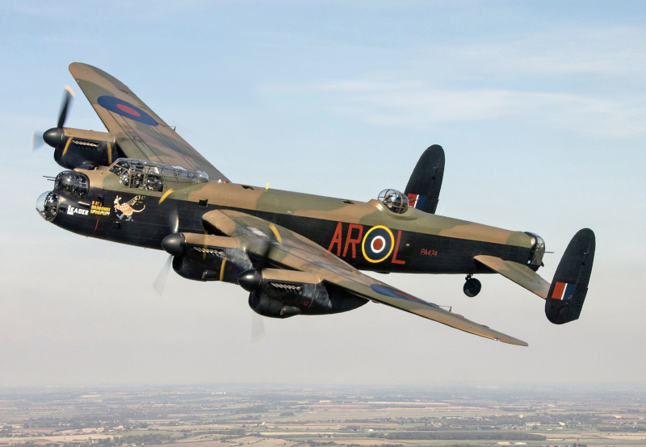
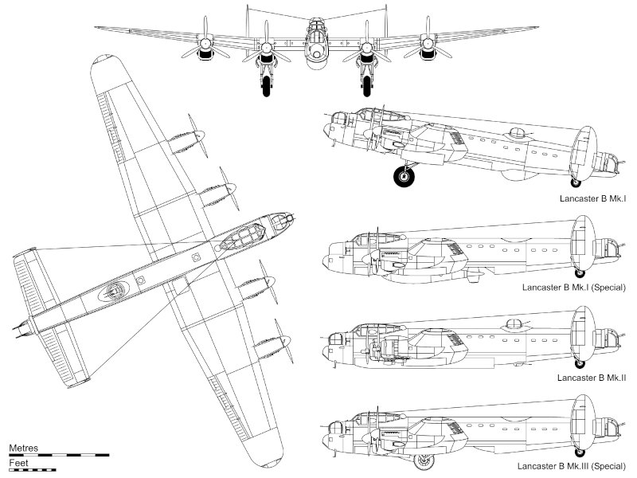

El espíritu de la providencia
«El espíritu de la providencia» es una aventura de unas 3 0 4 sesiones para SWAE ambientada en un bombardero inglés durante la II GM en misión de ataque sobre Alemania. Tu mesa será parte de la tripulación y su objetivo será sobrevivir a la misíon y a los extraños sucesos que estan ocurriendo durante el vuelo.
Esta aventura mezcla las aventuras bélicas de la II GM, los mitos de Cthulhu y el tono «pulp» que tiene el sistema de Savage Worlds. Prepárate a derribar cazas enemigos, a realizar todo tipo de proezas y acrobacias dentro y fuera de vuestro avión y de enfrentaros a todo tipo de monstruos de los Mitos de Cthulhu.
Sinopsis
Durante una misión de bombardeo sobre Alemania, el «Espíritu de la providencia» atraviesa con el resto de su escuadrón un extraño fenómeno meteorológico, mezcla de tormenta eléctrica y aurora boreal. En poco tiempo, su operador de radio que había muerto ametrallado en un ataque de cazas nazis, vuelve de entre los muertos y a partir de ese momento empiezan a pasar cosas muy extrañas en el bombardero.
En realidad, el operador de radio no ha vuelto milagrosamente de entre los muertos, sino que su cuerpo está poseído por Lakhum, sumo sacerdote de la secta de los siervos de XXX.
Hace una semana Lakhum había muerto de anciano, no sin antes dejar preparado el ritual para devolverle a la vida reencarnándose en el cadáver de un joven sano y atlético sacrificado para este ritual.
Para desgracia de todos, en el momento culmen del ritual, el «Espíritu de la providencia» paso sobre la zona del ritual y Lakhum se ha reencarnado en el cuerpo del operador de radio fallecido en vez del joven que había sido preparado en sacrificio.
Lakhum con, al principio, sus poderes mágicos mermados empezará a sabotear la misión para obligar a la escuadra a volver a casa sin cumplir la misión.
A medida que escuadrón de combate vaya perdiendo naves por los ataques de los cazas nazis, Lakhum se dará cuenta de que puede morir en el bombardero y cambiará de estrategia. Buscará obligar al bombardero a aterrizar para poder escapar en tierra, matando a arte de la tripulación.
Lo interesante de todo esto es que Lakhum deberá defender el bombardero de los ataques nazis con lo que usará sus poderes mágicos contra ellos también.
Tu mesa deberá primero averiguar lo que está pasando, o todo lo que puedan, y luego detener a Lakhum y en la medida de lo posible cumplir una misión especial de bombardeo de unas coordenadas específicas que les han asignado a ellos solos.
La misión
XXX
La misión transcurrirá de noche, una noche de luna nueva perfecta para un bombardeo.
XXX
El ritual
XXX
Es muy interesante que hasta el amanecer, si muere, Lakhum pueda abandonar su cuerpo y poseer otro cuerpo cercano de persona o monstruo.
XXX
La tripulación
XXX
Bombardero Avro 683 Lancaster
El Spirit of Providence (El espíritu de la providencia) es un bombardero «Avro 683 Lancaster» de la RAF (Royal Air Force). XXX
XXX


Los siervos de XXX
Los siervos de XXX es una secta de adoradores de XXX
XXX
Tópicos que usar en la aventura
- Puedes estropear la radio y que tengan que comunicarse de otras maneras con el resto de la escuadrilla.
- Hacer un picado para apagar el fuego del motor.
- Mucha altura necesitan oxígeno. Si no pueden matar a Lakhum, quizás puedan dejarlo inconsciente con la falta de oxígeno.
Bestiario
Noctivago demacrado (secuaz)
Los noctivagos son unos seres con unas grandes alas de murciélago y colas con pinchos afilados. Tiene tentáculos en vez de extremidades y cuernos en lo que sería su cabeza. Su piel es oscura y de una textura entre gomosa y aceitosa. Recuerdan a demonios o gárgolas.
Son bastante apacibles y nada agresivos, pero es difícil negociar con ellos, si han recibido una orden la cumplen sin preguntarse por qué.
Sirven principalmente al dios Nodens y tienen buenas relaciones con los gules. Proceden de las Tierras de los Sueños y se sabe, aunque no muy bien, que pueden moverse entre la Tierra de los Sueños y nuestro mundo.
Aunque tienen poderosos tentáculos y una cola afilada, normalmente reducen a sus enemigos con cosquillas.
Puede que parte de los antiguos mitos de demonios alados y de gárgolas sean fruto de estos seres.
- Atributos: Agilidad d8, Astucia d4, Espíritu d6, Fuerza d8, Vigor d6
- Habilidades: Atletismo d10, Notar d6, Pelear d8, Sigilo d8
- Paso: 6; Parada: 6; Dureza: 7(2)
- Ventajas: Rápido
- Capacidades especiales:
- Armadura +2: Su piel gomosa y es bastante resistente.
- Volar: Paso volando 12.
- Cosquillas: Los noctivagos pueden intentar hacer una acción de Presa con su cola. En caso de conseguir inmovilizarla, como acción gratuita, puede hacer cosquillas con la cola a su presa. Si la presa falla estará aturdido 1d6 turnos debido a que se ríe descontroladamente. Pasado esos turnos la presa puede tratar de escapar y el noctivago volver a hacerle cosquillas. Normalmente, cuando consigue aturdir a la víctima, toman altura y lo dejan caer.

.jpg){kind=link}
{kind=link}